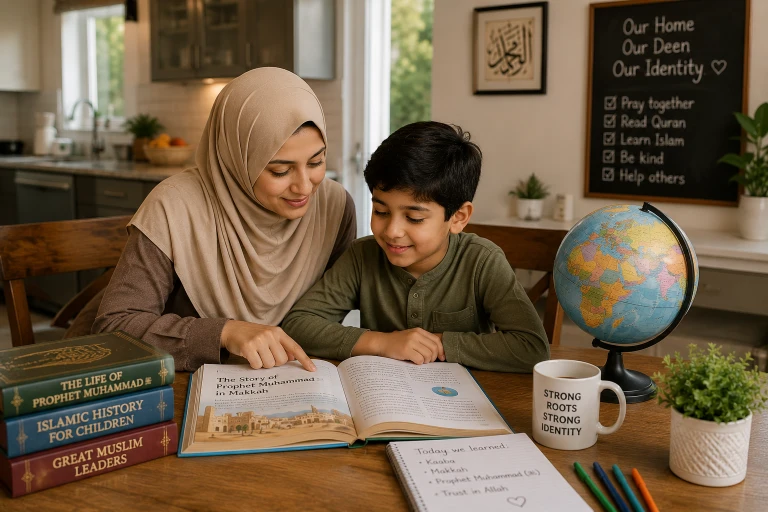

Raising a Muslim child in a non-Muslim society is one of the greatest challenges—and greatest opportunities—of our time. As parents, we want our children to succeed academically and socially, but more importantly, we want them to hold onto their Iman (faith) with pride. In a world that often promotes values contrary to Islam, how do we ensure our children don't just survive, but thrive as confident, practicing Muslims? This comprehensive guide provides practical, Quran-based strategies to help you raise a child who is proud of their Islamic identity.
📖 In This Complete Guide, You'll Learn:
- How to build an unshakeable Islamic identity at home from a young age
- Practical strategies for navigating school, friends, and social pressures
- How to handle Islamophobia and bullying with Islamic dignity
- The importance of finding a supportive Muslim community (Ummah)
- How to balance Western cultural norms with Islamic values
- Powerful duas and Quranic stories to strengthen your child's faith
🔑 Key Takeaways
- Your child's identity must be rooted in Allah's love, not people's approval.
- Make your home a "mini-Madinah" filled with Islamic reminders, joy, and peace.
- Teach them the "why" behind Islamic rules, not just the "what."
- Equip them with confident, polite responses to questions about their faith.
- Being different is a superpower—frame it as a privilege, not a burden.
In This Article
The Unique Challenge of Raising Muslim Kids in the West
Let's be honest: the environment our children grow up in is vastly different from the one we grew up in. They are exposed to social media, peer pressure, and a school curriculum that often sidelines or misrepresents Islam. As a result, many Muslim children experience an "identity crisis" during their teenage years, feeling torn between their home culture/faith and the society around them.
But here is the good news: Islam is not a fragile religion. It is the truth, and truth is resilient. Our job as parents is not to build a wall around our children, but to build a strong foundation inside them. When their roots are deep, the winds of societal pressure won't uproot them.
The Prophet (PBUH) said: "Islam began as something strange and will return to being strange as it began, so give glad tidings to the strangers." When asked, "Who are the strangers?" he replied: "Those who rectify themselves when the people have become corrupt."
— Sahih Muslim 145Remind your child that being a "stranger" in this society is actually a badge of honor. They are part of an elite group holding onto the truth when it's difficult.
Building a Strong Islamic Identity at Home
Your home is your child's first school and their safe haven. It should be a place where Islam is not just practiced, but enjoyed.
1. Make Islam Synonymous with Love
If the only time your child hears about Allah is when they are being scolded ("Allah will be angry with you!"), they will develop a fearful, negative association with their faith. Instead, talk about Allah's mercy, His beautiful names, and how much He loves them. Say things like, "Allah gave you those beautiful eyes to see the world," or "Allah made this delicious food for us, let's say Alhamdulillah."
2. Establish Visible Islamic Routines
Children learn by observation. Let them see you praying on time, reading Quran daily, and making dua. Create a dedicated, beautiful prayer corner in your house. Play soft Quran recitation in the background during car rides or meal prep. These subtle cues normalize Islam in their daily lives.
3. Teach the "Why" Behind the Rules
When a child asks, "Why can't I eat pork?" or "Why do I have to wear hijab?", don't just say, "Because Allah said so." While that is the ultimate reason, children need logical, age-appropriate explanations. Explain the health benefits of halal, the concept of modesty as a form of self-respect, and how these rules protect their dignity. When they understand the wisdom, they follow the rules out of love, not just fear.
Celebrate Islamic milestones with excitement! Decorate the house for Ramadan, give gifts on Eid, and make a big deal out of when they memorize a new Surah. If they see you excited about Islam, they will be too.
Navigating School and Social Life
School is where your child will face the most significant tests of their faith. Here is how to prepare them:
1. Equip Them with Confident Responses
Children will get questions: "Why do you fast?" "Why don't you eat that?" "Why do you pray?" Role-play these scenarios at home. Teach them to answer with a smile and confidence: "I fast because it teaches me self-control and helps me feel for the poor," or "I pray because it's my direct connection to God." When they speak confidently, peers are less likely to mock them.
2. Choose Friends Wisely (Without Forcing Isolation)
The Prophet (PBUH) said: "A person is upon the religion of his close friend." (Tirmidhi 2378). You cannot choose their friends for them, but you can guide them. Encourage them to befriend kind, respectful children regardless of their faith, but gently steer them away from those who mock their values. Host playdates and invite their friends over so you can observe the dynamics.
3. Be the "Cool" Parent
If you want your child to come to you with their problems, you must be approachable. Show interest in their hobbies, watch the movies they watch (to understand the culture), and listen without immediately judging. If they feel understood at home, they won't seek validation from unhealthy sources outside.

Handling Islamophobia and Bullying
Unfortunately, Muslim children often face bullying, whether it's about their lunchbox, their clothes, or world events. Here is how to handle it Islamically:
1. Validate Their Feelings
Never dismiss their pain by saying, "Just ignore it." Acknowledge that it hurts. Say, "I know it's hard when people make fun of something you love. The Prophet (PBUH) was also made fun of, and Allah protected him."
2. Teach the "Stop, Walk, Talk" Method
Islam teaches dignity, not passivity. Teach your child to:
- Stop: Look the bully in the eye and say firmly, "Stop. That is not okay."
- Walk: Walk away calmly. Do not give them the emotional reaction they want.
- Talk: Immediately tell a teacher, counselor, or you (the parent).
3. Advocate for Your Child at School
If the bullying is severe or involves religious discrimination, do not hesitate to contact the school. Request a meeting with the principal. Ask about their anti-bullying policy and how they plan to enforce it. You are your child's biggest advocate.
Do not tell your child to "fight back" physically unless it's immediate self-defense. Do not tell them to hide their Islamic identity to "fit in." Compromising their Deen for popularity is a loss in this life and the next.
Finding a Supportive Muslim Community
A child cannot thrive as a Muslim if they feel they are the only one. You must actively seek out the Ummah.
- Local Mosque: Even if it's far, make the weekend trip. Let them see hundreds of Muslims praying together. It gives them a sense of belonging.
- Islamic Weekend Schools: Enroll them in classes where they can learn Arabic and Islamic studies alongside other Muslim kids.
- Muslim Scouts/Clubs: Organizations like Muslim Scouts or local youth groups provide a fun, halal environment for socialization.
- Online Communities: Join Facebook groups for Muslim parents in your region. Organize park meetups or potlucks.
When your child has Muslim friends who share their values, they realize that being Muslim is normal, beautiful, and mainstream.
Balancing Deen and Dunya
We want our children to be doctors, engineers, and artists, but first and foremost, we want them to be good Muslims. Teach them that Islam does not forbid success in this world; it encourages it, as long as it's halal.
Share stories of Muslim scientists, inventors, and leaders from history (like Ibn Sina, Maryam Mirzakhani, or Mo Salah). Show them that Muslims have contributed massively to human civilization. This builds immense pride and shows them that they can be successful in the West without sacrificing their faith.
The Ultimate Parent's Dua: "Rabbana hab lana min azwajina wa dhurriyatina qurrata a'yun..."
"Our Lord, grant us from among our wives and offspring comfort to our eyes and make us an example for the righteous." (Surah Al-Furqan 25:74)
Recite this dua constantly. Your sincere prayers are the most powerful tool you have in raising a righteous child.
Frequently Asked Questions
🌱 You Are Not Alone in This Journey
Raising a Muslim child in the West is tough, but you are raising a generation that will carry the light of Islam forward. Be patient, be consistent, and trust in Allah's plan. Your efforts, no matter how small they seem, are recorded and rewarded.
What is your biggest challenge in raising your child in a non-Muslim society? Share below!
Final Thoughts
At the end of the day, guidance (Hidayah) comes only from Allah. We can provide the best environment, the best schools, and the best advice, but it is Allah who places faith in the heart. So, make lots of dua, trust in His wisdom, and never lose hope. Your child is an Amanah (trust) from Allah, and He will help you protect and nurture this trust if you sincerely strive for His sake. May Allah make our children the coolness of our eyes and leaders of the righteous. Ameen.